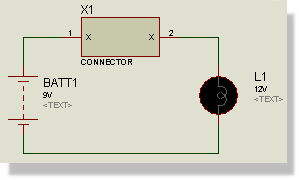

If a device element has more than one pin with the same name, these pins will be considered to be internally interconnected. For example, in a simulation of the circuit below, the light bulb will light, because the two X pins are deemed to be connected.

Connector and Lamp circuit
Typically, this is relevant for devices which have multiple power or ground pins, but it can also be handy when drawing schematics for wiring matrices such as keypad switch or led arrays.